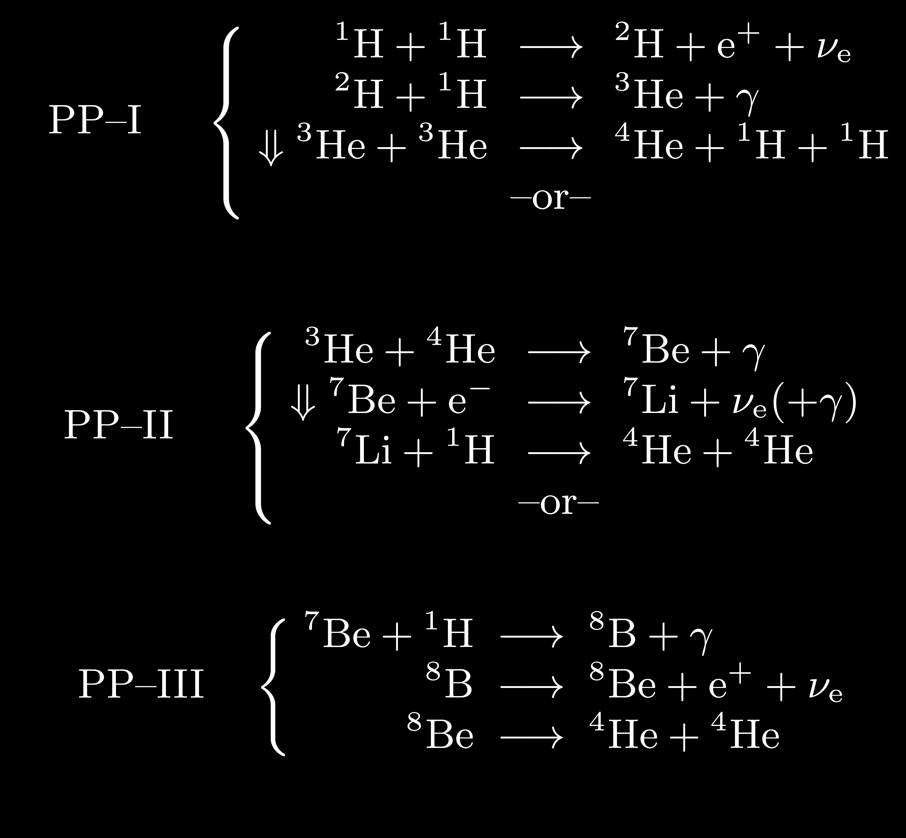
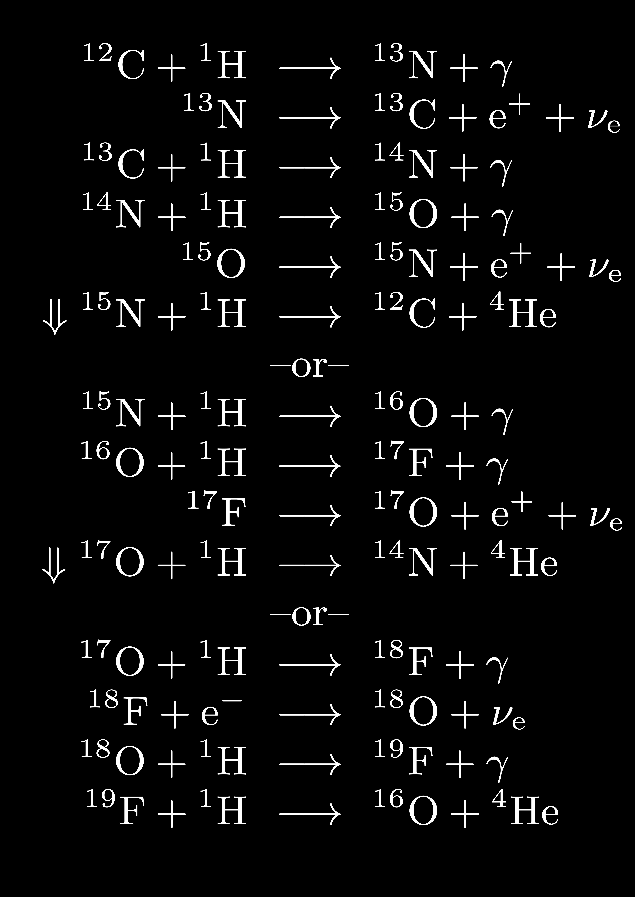
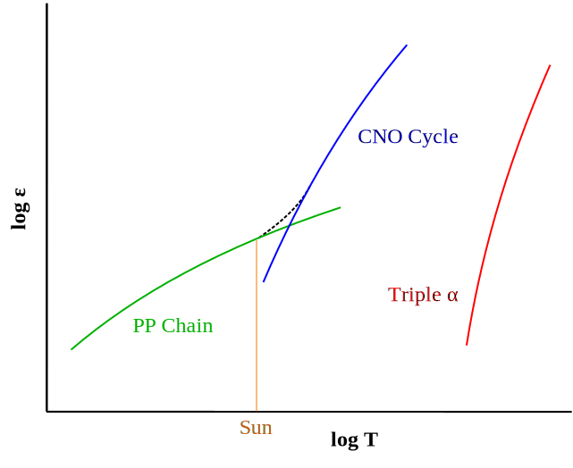
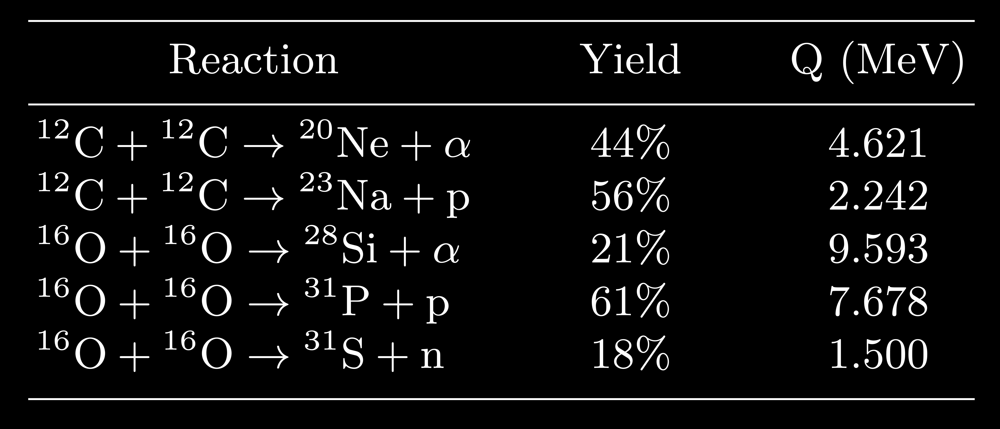

Nuclear Burning and Neutrino Emission Mechanisms#
Notes based on HKT Chapter 6.3-6.8.
Wednesday, Feb. 19, 2025
astrophysics of stars and planets - spring 2025 - university of arizona, steward observatory
Today’s Agenda#
Announcements - Final Project Details Posted (2m)
Reading Overview/Key Points (10m)
Homework 2 Review (20m)
Debrief + Share Results (15m)
The Proton–Proton Chains#
The first set of nuclear burning we will discuss is that of the The Proton–Proton Chains. A series of reactions that lead to the production of {\(^{4}\rm{He}\)}.
Proton–Proton Chain Reactions
{kind=link}
In general, the different reactions and subsequent chains become more important as the temperature increases. Another way to visualize these reactions is via a mass number \(A\) versus charge \(Z\).
Proton–Proton Chain Reaction Flow

Starting from \({^{1}\rm{H}}\), the arrows for the reaction sequences in the three \(pp\)-chains all end up at \({^{4}\rm{He}}\). The slowest reaction in the chain is the pp-reaction itself, leading to it being a bottleneck and controlling the lifetime of the star on the main-sequence.
Because these rates can contribute differently, one can often define an effective \(Q\)-value based on weights of the contribution for each subchain:
Definition 99
depending only on the hydrogen mass fraction, \(X\). This allows use to also compute an effective energy generation rate:
Definition 100
Recall from Table 1.1 in HKT, the temperature dependence for \(\epsilon_{pp}\propto^{4}\).
The Carbon–Nitrogen–Oxygen (CNO) Cycles#
Next, we consider the CNO cycles: a series of proton captures on isotopes of CNO, positron decays and ending with a proton capture to produce \({^{4}\rm{He}}\).
CNO Cycle Reactions
{kind=link}
Similar to the \(pp\)-chains we can determine an effective energy generation rate, for the CNO cycle, the slowest reaction (lowest reaction rate) in the sequence is the \({^{14}\textrm{N}(p,\gamma)^{15}\textrm{O}}\). This reaction is often referred to as the bottleneck reaction rate for stars that burn H via the CNO cycles.
Definition 101
The temperature exponent is significantly larger than that of the \(pp\)-chains with \(\nu\approx18\).
Cross over temperature for pp-chains to CNO cycles
{kind=link}
Helium-Burning Reactions#
Helium burning in stars will begin in earnest at sufficient tempratures (> \(10^{8}\) K) via the first step in the “triple-alpha” reaction:
However, recall that \({^{8}\textrm{Be}}\) has a lifetime of only \(10^{-16}\) seconds! So, the next stage of the reaction can only proceed at sufficient \(T\) and seed \({^{8}\textrm{Be}}\) nuclei available. The next reaction in the sequence is
Observation 9
Note an intermediate step via the creation of an excited state of \(^{12}\textrm{C}^{*}\) which can decay back to \(^{8}\textrm{Be}\). The main point being that not all forward reactions will lead to creation of \(^{12}\textrm{C}\).
We can similarly determine an energy generation rate for triple-\(\alpha\):
Definition 102
At a temperature of \(T_{8}=1\), the temperature exponent \(\nu_{3\alpha}\approx40\)!
Next, we have the \({^{12}\textrm{C}}(\alpha,\gamma){^{16}\textrm{O}}\) reaction.
“If users find that their results in a given study are sensitive to the rate of the \({^{12}\textrm{C}}(\alpha,\gamma){^{16}\textrm{O}}\) reaction, then they should repeat their calculations with 0.5 times and 2 times the values recommended here.” - Fowler (1985)
This reaction rate, which operates at tempratures of around \(0.02\lesssim T_{9}\lesssim10\).
Finally, we have the \({^{16}\textrm{O}}(\alpha,\gamma){^{20}\textrm{Ne}}\) reaction.
Observation 10
The race between how quickly \({^{12}\textrm{C}}\) is produced via triple-\(\alpha\) and how quickly it is consumed via \({^{16}\textrm{O}}(\alpha,\gamma){^{20}\textrm{Ne}}\) is of significant consequence for many different subsequent stellar evolution consequence. For example, the final C/O ratio of white dwarf star can lead to different observational properties.
Carbon, Neon, and Oxygen Burning#
Carbon Burning The first of these advanced burning stages is carbon-burning via the compound heavy ion reaction chains for \({^{12}\textrm{C}+{^{12}\textrm{C}}\) and their exit channels.
These compound carbon reactions are following by \((p,\alpha)\) and \((p,\gamma)\) reactions to produce primarly \({^{20}\rm{Ne}}\) and at lesser amounts \({^{23}\rm{Na}}\) and \({^{24}\rm{Mg}}\).
The energy generation rate for these two reactions is given by
Definition 103
These reactions are susceptible to strong electron screening effects.
Neon Burning Neon burning takes place via photodisintegration the use of high-energy photons to break up \({^{20}\rm{Ne}}\) via the \({^{20}\rm{Ne}(\gamma,\alpha)^{16}\textrm{O}}\).
However, temperatures are also high enough to allow the reaction sequence, \({^{20}\rm{Ne}(\alpha,\gamma)^{24}\textrm{Mg}} {^{24}\rm{Mg}(\alpha,\gamma)^{28}\textrm{Si}}\).
The net result of neon burning is \({^{16}\rm{O}}\), \({^{24}\rm{Mg}}\), and \({^{28}\rm{Si}}\).
Oxygen Burning Oxygen burning proceeds in a similar fashion as carbon this time with three exit channels summarized in the Table below:
Table of Carbon- and Oxygen-Burning Reactions
{kind=link}
The energy generation rate for these reactions is given by
Definition 104
Observation 11
We note that \({^{12}\textrm{C} + ^{16}\textrm{O}}\) are possible by the seed \(^{12}\textrm{C}\) is used up quickly by \(^{12}\textrm{C}+^{12}\textrm{C}\) and the \(^{12}\textrm{C} + ^{16}\textrm{O}\) reaction is intrinsically slow.
The final result of this stage is the production of \({^{28}\rm{Si}}\), \({^{30}\rm{Si}}\), and \({^{32}\rm{S}}\) depending on the conditions in the core.
Silicon “Burning” or “Melting”#
At temperatures of about \(T>3\times10^{9} (\rm{K})\), many reactions are possible. More importantly, photodisintigration plays a role in Silicon burning via the path:
In this process, the photodisintegration has essentially add two neutrons to produce \({^{30}\rm{Si}}\). Many similar pathways comprise the collection of silicon burning. An example of the reaction network is shown below:
Silicon Burning Reaction Network
Credit: Adapted by Clayton (1968) from Truran et al. (1966) - A sample reaction network for silicon burning that also shows the re- actions possible between nuclei in the network.
As burning advances you can reach quasi-statistical equilibrium (QSE) where the photodisintigration rates roughly match the capture rates. This could allow one to leverage the Saha equation at this point.
The result of silicon burning is production of nuclei in the iron peak. For quiescient burning, where much time is allowed to pass, the most abundant nuceli is \({^{56}\rm{Fe}}\). For short timescales such as in CCSNe, the electron/positron decay and electron capture rates are insufficient and the primary product is \({^{56}\rm{Ni}}\).
Neutrino Emission Mechanisms#
In general, neutrino absorption or scattering requires high density or neutrino energies. We can determine this value by looking at the mean free path for a neutrino as \(\lambda\sim10^{20}\mathcal{E}^{-2}_{\nu}/\rho \ (\textrm{cm})\). This can typically occur in the proto-neutron star, the collapsed iron core of a massive star where nuclear densities are reached, and the neutrinos can become “trapped”.
In less extreme stellar environments, we can think of neutrinos as a power drain modifying our energy equation to be, \(d \mathcal{L}/dm=-\epsilon_{\nu}\), neutrinos remove energy from the system.
Pair Annihilation Neutrinos#
Produced by the annihilation of an electron by a positron
however, this reaction requires positrons. This can be accomplished at sufficient temperatures, (\(kT \sim 2 m_{e}c^2\)) such that ambient photons can undergo pair creation (often called pair production):
Photoneutrinos and Bremsstrahlung Neutrinos#
Photoneutrinos Similar to electron-photon scattering but not producing a gamma ray:
Bremsstrahlung (braking radiation) Neutrinos
Yields a photon when an electron is scattered off and accelerated (positive or negative) by an ion. This is an important energy loss mechanism for hot white dwarfs.
Plasma Neutrinos#
In a very dense plasma, electromagnetic waves can be quantized in such a way that they behave like relativistic Bose particles with finite mass, plasmons. These can decay into \(e^{-} + e^{+}\) or \(\nu_{e} + \bar{\nu_{e}}\) pairs.
Combined Neutrino Loss Rates

Credit: Adapted from the calculations of Itoh and collaborators.
Homework 2 Review#
2 groups, choose a problem each, converge on and write up solutions to share at the end of class.